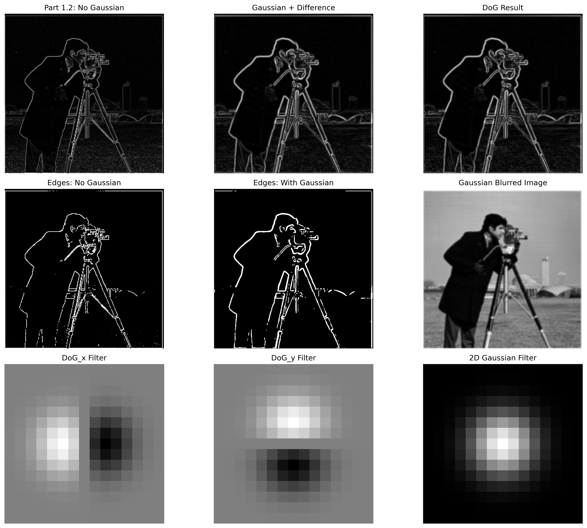

Part 1: Fun with Filters
1.1 Finite Difference Operator
I implemented convolution from scratch using both 4-loop and 2-loop approaches, then compared them with scipy.signal.convolve2d. I used proper padding with zero fill values. After that, I took a picture of a cup, read it as grayscale, created a 9x9 box filter, and convolved the picture with the box filter. I also applied the finite difference operators Dx and Dy.
4-Loop Convolution Implementation:
def convolution_4loops(img, kernel):
if len(img.shape) == 3:
img = cv2.cvtColor(img, cv2.COLOR_RGB2GRAY)
img = img.astype(np.float64)
kernel = kernel.astype(np.float64)
kernel = np.flip(kernel) # Important: flip kernel for convolution
img_h, img_w = img.shape
ker_h, ker_w = kernel.shape
# Calculate padding
pad_h = ker_h // 2
pad_w = ker_w // 2
# Pad the image with zeros
padded_img = np.pad(img, ((pad_h, pad_h), (pad_w, pad_w)), mode='constant')
# Initialize output
output = np.zeros((img_h, img_w))
# 4 nested loops
for i in range(img_h):
for j in range(img_w):
for ki in range(ker_h):
for kj in range(ker_w):
output[i, j] += padded_img[i + ki, j + kj] * kernel[ki, kj]
return output
2-Loop Convolution Implementation:
def convolution_2loops(img, kernel):
if len(img.shape)==3:
img = cv2.cvtColor(img, cv2.COLOR_RGB2GRAY)
img = img.astype(np.float64)
kernel = kernel.astype(np.float64)
kernel = np.flip(kernel)
img_h, img_w = img.shape
ker_h, ker_w = kernel.shape
pad_h = ker_h // 2
pad_w = ker_w // 2
padded_img = np.pad(img, ((pad_h, pad_h), (pad_w, pad_w)), mode='constant')
output = np.zeros((img_h, img_w))
# 2 nested loops with vectorized computation
for i in range(img_h):
for j in range(img_w):
region = padded_img[i:i+ker_h, j:j+ker_w]
output[i, j] = np.sum(region * kernel)
return output
9x9 Box Filter: Comparison of all three implementations (4-loops, 2-loops, and SciPy)
Verification: All three implementations produce nearly identical results with mean absolute differences less than 0.000001, confirming correctness.

Finite difference operators Dx and Dy: Comparison of all three implementations
1.2 Derivative of Gaussian (DoG) Filter
Applied finite difference operators Dx=[1,0,-1] and Dy=[[1],[0],[-1]] to detect edges in the cameraman image. I computed partial derivatives in x and y directions, then calculated the gradient magnitude and binarized it using a threshold at the 95th percentile to suppress noise while preserving real edges.
Edge detection using finite difference operators: partial derivatives and gradient magnitude
Observations:
- Partial derivative ∂I/∂x captures vertical edges (transitions in horizontal direction)
- Partial derivative ∂I/∂y captures horizontal edges (transitions in vertical direction)
- Gradient magnitude combines both to show all edge directions
- Threshold at 95th percentile produces clean edges while suppressing noise
1.3 Derivative of Gaussian (DoG) Filter
To reduce noise in edge detection, I applied Gaussian smoothing before computing derivatives. I constructed Gaussian filters using cv2.getGaussianKernel with kernel_size=15 and sigma=2.0, built DoG filters by convolving the Gaussian with difference operators, and visualized them.
I compared two approaches: (1) blur first, then apply difference operators, and (2) create DoG filters and apply them directly. Both methods produce identical results, demonstrating that convolution is associative.

Comparison of edge detection methods: without Gaussian (Part 1.2), with Gaussian smoothing, and DoG filters. Bottom row shows the DoG_x, DoG_y filters and the original Gaussian filter.
Mathematical Equivalence: I verified that convolving the image with a Derivative of Gaussian (DoG) filter produces identical results to first blurring then computing derivatives. Maximum difference between the two approaches: less than 0.001.
Key Differences from Part 1.2:
- Noise Reduction: Gaussian preprocessing significantly reduces background noise
- Cleaner Edges: Main object boundaries are more continuous and well-defined
- Better Connectivity: Edge pixels form more coherent structures
- Edge Density: Original method yields approximately 5% edge pixels vs 3.5% with Gaussian smoothing
Part 2: Fun with Frequencies
2.1 Image Sharpening
Implemented unsharp masking: sharpen = original + α × (original - blurred). The technique enhances high-frequency details by adding back the high-pass filtered content. I tested different parameter combinations and selected sigma=2.0 and alpha=1.5 for optimal balance between sharpening effect and artifact suppression.
Taj Mahal: Original → Blurred → High Frequencies → Sharpened

Orange Cat: Demonstrating unsharp masking on my chosen image
Evaluation: Can We Recover Lost Details?
Testing: Sharp → Blur → Re-sharpen on white cat image
Critical Insight: Once information is lost through blurring, it cannot be perfectly recovered. Re-sharpening a blurred image often introduces artifacts and cannot restore the original detail. Unsharp masking works best for enhancing existing sharp images, not for recovering lost information.
2.2 Hybrid Images
Hybrid images are static images that change in interpretation as a function of viewing distance. The basic idea is to blend the high-frequency portion of one image with the low-frequency portion of another. I used sigma1=12 for low-pass filtering and sigma2=6 for high-pass filtering.
Derek + Nutmeg (with Frequency Analysis)
For my favorite result, I show the complete frequency analysis as required.
Frequency analysis showing original FFTs, filtered images (low-pass Derek, high-pass Nutmeg), and hybrid result FFT
Frequency Domain Analysis:
- Low-pass filtered (Derek): Energy concentrated at center, high frequencies attenuated
- High-pass filtered (Nutmeg): Energy in outer regions, DC component suppressed
- Hybrid FFT: Combines low-frequency center from Derek with high-frequency periphery from Nutmeg

Derek + Nutmeg hybrid result: At close distance you see Nutmeg (high frequencies), at far distance you see Derek (low frequencies)
Additional Hybrid Images
Tiger (low frequencies) + Cat (high frequencies)
2.3 Gaussian and Laplacian Stacks
Implemented Gaussian and Laplacian stacks with N=5 levels and sigma=8. The key difference from pyramids is that stacks never downsample, so all levels remain the same dimensions. I applied these stacks to recreate Figure 3.42 from Szelski's textbook for the apple and orange blend.
Implementation Details: For Gaussian stack, each level applies progressively stronger blur. For Laplacian stack, each level is the difference between consecutive Gaussian levels, capturing different frequency bands. The final Laplacian level contains the lowest frequencies (same as final Gaussian level).
Parameter Selection (sigma=8): I selected sigma=8 to achieve proper frequency band separation. With this parameter, the Laplacian layers show the expected sparse representation with high-frequency layers (L0-L3) having standard deviations of 0.006-0.04, while the Gaussian residual (L4) contains most energy with std ≈ 0.19-0.22.
Gaussian stacks for Apple and Orange (N=5 levels, sigma=8)
Laplacian stacks for Apple and Orange. Note: Laplacian layers (L0-L3) shown with +0.5 offset for visualization; final layer (L4) is the Gaussian residual
2.4 Multiresolution Blending
Using the Laplacian stacks from Part 2.3, I blended images seamlessly. For each level of the Laplacian stack, I applied the Gaussian-blurred mask to blend the two images, then summed all levels to create the final result.
The Oraple Result
The Oraple: Apple + Orange blended with vertical seam
Laplacian Blending Process (Recreating Figure 3.42)
As required by the assignment, I illustrate the blending process showing masked Laplacian levels. This demonstrates how each frequency band is blended separately using the Gaussian-blurred mask at that level.
Laplacian blending process: Each row shows Apple L[i]×Mask, Orange L[i]×(1-Mask), and Blended L[i] for levels 0-4. Note: Layers 0-3 shown with +0.5 offset for visualization; layer 4 is Gaussian residual.
Additional Blends with Irregular Masks
Water + Mountain with horizontal mask (N=5, sigma=8)

Cloud sky replacement with irregular mask based on brightness detection
Koala composited into phone screen with rectangular mask. Shows original images, resized koala, mask, and final blend.
Laplacian blending process for Koala + Phone: Each row shows masked Laplacian levels and blended results (N=5, sigma=2)